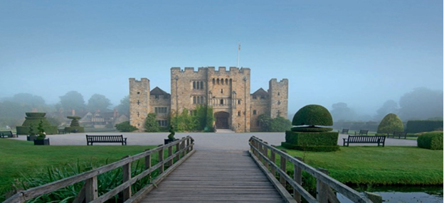

Childhood: 1501 - 1513
Birth: c. 1501/2 in Blickling, Norfolk, England.
Parents: Thomas Boleyn, and Elizabeth Howard (from noble families, who would be given higher noble titles by Henry VIII when their daughter Anne became popular at court).
Siblings: Older sister: Mary born c. 1499/1500 and younger brother: George born c. 1503/4
1505: Thomas Boleyn inherits Hever Castle in Kent and a noble title upon the death of his father, and the family moves there.
